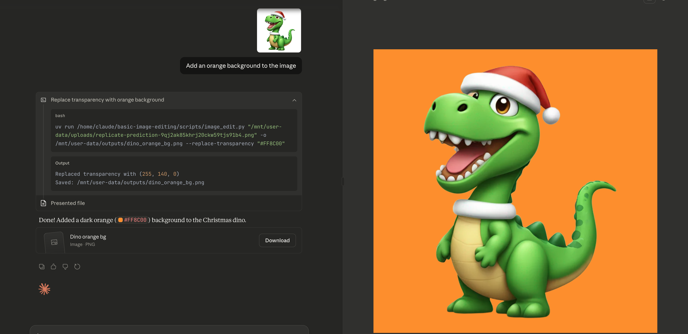
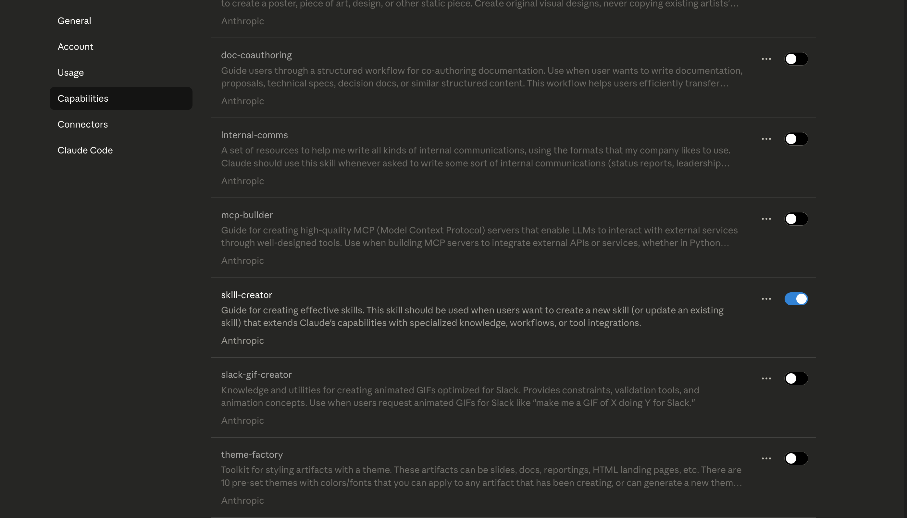
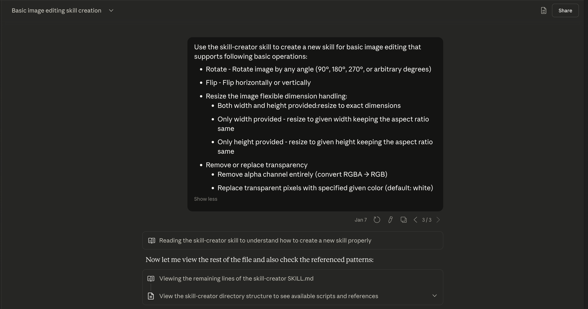
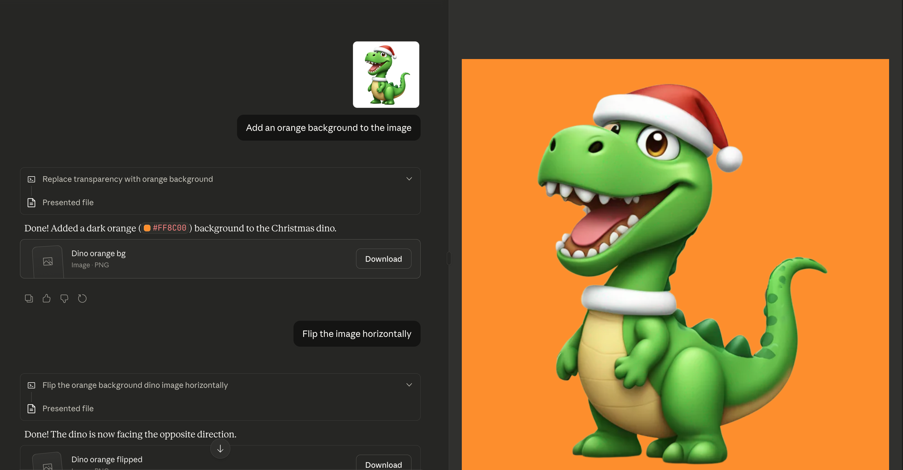
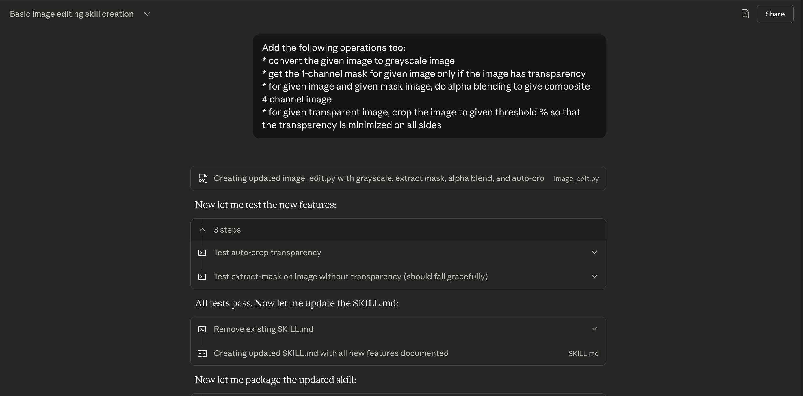
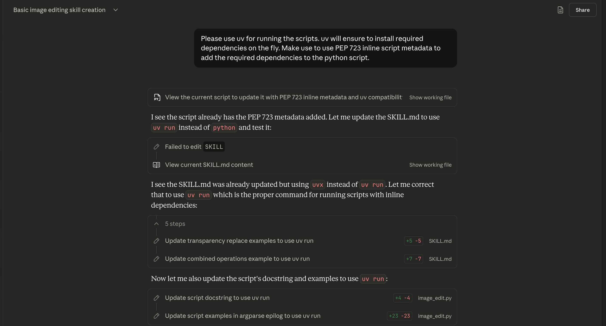

A Brief Introduction to Claude Agent Skills
If you have been following X or LinkedIn for the last few weeks, you have probably noticed the buzz around Claude Skills (or Agent Skills), apart from all the fanfare around Claude Code. There are tweets and posts appreciating their simplicity, devs sharing custom skills for everything from document generation to API integrations. I would say the hype is well deserved and genuine.
I had been aware of Claude Skills when they launched in October 2025 (thanks to Simon Willison’s blog post). However, I did not really dig into them until I came across this Hugging Face blog post where they used Claude Code to fine-tune an open-source LLM. They built Hugging Face Skills that let you do something like this Fine-tune Qwen3-0.6B on the dataset open-r1/codeforces-cots and Claude handles everything from GPU selection, script generation, job submission, progress monitoring and pushing the finished model to the Hub. That was a woah moment for me!
Skills deserve all the attention they are getting. They provide the domain knowledge that modern LLMs and agents need despite their impressive general capabilities. They are simple folders with packaged expertise that agents can dynamically invoke for relevant requests.
In this post, I will explain what skills are, why they matter and walk you through one of the skills I use daily: a simple image editing skill as an example of how you can quickly build skills for your own use.

What Are Agent Skills?
Simply put, Skills are organized folders that package expertise into discoverable capabilities. Each skill contains a SKILL.md, a markdown file with some YAML metadata, with instructions that Claude reads when relevant. This is along with optional supporting files like scripts and templates.
As Barry described in his AI Engineer talk, think of them as “expertise packages” that Claude can discover and load dynamically.
That is really all there is to skills. There are no complex protocols, no server infrastructure and no elaborate configuration. Just text files that describe how to do something optionally paired with scripts that make the task more reliable. Simon Wilson has rightly mentioned it in his blog post: “Skills feel a lot closer to the spirit of LLMs - throw in some text and let the model figure it out.”
Since Anthropic released Agent Skills as an open standard in December 2025, skills are rapidly becoming available across different coding agents: GitHub Copilot, Codex CLI, Cursor and more.
It is also important to distinguish skills from other customization options like claude.md, MCP servers, and subagents.
| Skills | Claude.md | MCP Servers | Subagents | |
|---|---|---|---|---|
| What it is | Folders containing instructions, scripts, and resources that teach Claude how to perform specialized tasks | A markdown file that tells Claude about a specific project | A protocol that connects Claude to external data sources | Specialized AI assistants with fixed roles and their own context window |
| Scope | Portable across projects and agents | Project-specific | Tool/service-specific | Task-specific |
| Lives in | ~/.claude/skills/ or .claude/skills/ |
Root of your repository | External servers (GitHub, Slack, databases) | Spawned during task execution |
| Example | Generate accessible PDF reports according to company guidelines | This project uses Next.js 14, Tailwind, and PostgreSQL | Connect to our PostgreSQL database | Code review agent with read-only permissions |
| Use when | You need repeatable domain expertise across multiple projects | You are onboarding Claude to a specific codebase | You need Claude to access external data or services | You want to delegate distinct subtasks to specialized assistants |
This is how I differential them:
- Claude.md gives Claude context about where it’s working
- MCP gives Claude access to data and services
- Skills give Claude expertise on how to do things well
- Subagents let Claude delegate work to specialized assistants
How Skills are Dynamically Loaded
I have used the term “dynamically loaded” quite a few times now. This is because Skills are progressively disclosed using a three-tier loading mechanism:
Metadata only (~30-100 tokens): At startup, Claude sees just the
nameanddescriptionfrom each skill’s YAML frontmatter. This is enough to know the skill exists.Full instructions (when relevant): When your request matches a skill’s description, Claude loads the complete
SKILL.mdcontent.Supporting files (on demand): Scripts, templates, and reference docs are loaded only when actually needed.
This is what makes skills so useful and efficient. Claude can have hundreds of skills installed without blowing up the context window. Compare this to MCP servers where tool descriptions often consume hundreds or even thousands of tokens upfront regardless of whether you use them.
For a deeper dive into the loading mechanics, please go through the Claude Skills Cookbook.
What Makes Skills Valuable
Once you start using skills, you will discover many benefits. For me, the following ones stand out:
- Skills provide Claude domain expertise, turning Claude from a brilliant generalist into a domain expert for your specific workflows.
- Write a skill once, use it anywhere. The same skill works in Claude.ai, Claude Code, and via the API. And since Agent Skills became an open standard, they work across other agents like GitHub Copilot, Codex CLI and Cursor.
- Skills ensure repeatability and reliability. Often, skills include scripts and pre-defined workflows, so Claude does not reinvent the wheel every time. It uses code that is known to work consistently.
- They are progressively loaded which ensures not just token efficiency but also time saving. For example, it forces Claude to use existing solutions instead of generating code from scratch.
- Moreover, you don’t need to be a developer to create skills. You can use the
Skills-Creatorskill in the Claude app or Claude Code to build your own skills just by describing (and iterating) what you want.
How Skills are Organized
The basic structure is surprisingly simple. Every skill follows the same pattern:
my-skill/
├── SKILL.md # Required: the brain of the skill
├── scripts/ # Optional: utility scripts
│ └── helper.py
│..... # Other optional filesThe only required file is SKILL.md. Everything else is optional and loaded only when needed. It has two parts: YAML frontmatter for metadata and the markdown content for instructions.
For example, here is the frontmatter from my basic image editing skill:
---
name: basic-image-editing
description: Image manipulation tool for resizing, rotation, flipping, cropping, padding, format conversion (JPEG/PNG/WebP/TIFF/HEIC), transparency operations (remove/replace/extract/blend), grayscale conversion, auto-cropping borders, and file size optimization. Use when users need to transform, convert, or optimize images.
---This is what gets loaded in Claude’s context at startup. You can see the full SKILL.md on GitHub.
After the frontmatter comes the actual instruction content. Your SKILL.md content usually include:
- A brief definition of what the skill does
- Clear instructions on how to use it (commands, workflows, steps)
- Examples showing common use cases with actual command snippets. I find that providing examples in the SKILL.md file really helps Claude understand the correct way to call the scripts.
- Edge cases or constraints if any exist
- References to supporting scripts or templates if the skill uses them
Building Your Own Skill
There are multiple ways to create skills:
Write everything from scratch: You have full control. Create the folder structure manually, write the SKILL.md yourself and add your own scripts. > I would not recommend this approach. It is better to use Claude to generate the first version and iterate over it.
Use Claude Code with the Skills Creator skill — If you are already working in Claude Code, you can describe what you want and let Claude scaffold the skill for you. See Eleanor Berger’s videos where she walks through an example of building invoice and reports generation skills in Claude Code.
Use the Claude web app: This is my preferred approach, especially for personal use. Everything happens in a UI-based interface. You describe what you want, have a conversation with Claude, test it immediately and iterate until it works.
Walkthrough: Creating the Basic Image Editing Skill
Let me walk through how I created my basic image editing skill using the third approach.
Step 1: Have Clarity on What the Skill Should Do
Before creating a skill, you should have a clear idea of what it should do. Maybe you want a skill that generates PDF reports on the fly or one that handles data analysis or something else entirely. It doesn’t matter if you don’t know how to implement it. What matters is knowing what you want it to accomplish.
For example, I work a lot with images. I often need to do basic editing operations like resizing, rotating, and cropping. These are simple operations but I do them constantly. A basic image editing skill accessible in Claude makes a lot of sense for my day to day work.
Step 2: Bootstrap with the Skills Creator
First of all, ensure the skill-creator skill is enabled in your Claude account. You can do this by going to Settings -> Capabilities and enabling the skill-creator skill.

Once you have enabled the skill-creator, you can describe what you want to create a skill for. For eg, I want to create a skill for basic image editing:

Claude used the skill-creator framework to scaffold the initial structure: a SKILL.md with proper YAML frontmatter and a Python script with core operations.
Step 3: Test Immediately, Iterate Constantly
One thing I always make sure of: I dont try to create a polished skill in one go. Whatever skill gets created, test it immediately. This is one of the things I appreciate about creating skills in the Claude web app. You can test them instantly in the same conversation.
For eg, I uploaded a test image and asked Claude to change the background to orange:

This gives you a tight feedback loop. You test what you’re building, and if something doesn’t work, Claude can fix it for you right there. No context-switching between environments. You build, test, and refine in one place.
Step 4: Iterate and Improve
Once you have a basic working version, you can start adding more operations and optimizing.

Similarly, since this skill runs Python scripts locally, I switched to PEP 723 inline metadata so uv run installs dependencies automatically on the fly:
If you have some domain knowledge, use it. Go through the code Claude generated and check if it’s doing something redundant. You can review and ask Claude to make those optimizations.

Finally, once you have a version you are happy with, go through the SKILL.md file and make sure the examples are good. If not, add them manually. Good examples help Claude understand exactly how to use the skill.
Step 5: Export and Use Across Agents
Once you have a skill you want to keep, export it. You can use it in the Claude web app, Claude Code, or other agents like Codex CLI and Cursor.
The Iterative Philosophy
Treat skills as living documents, not finished products. Your first version may not be perfect. You will find gaps and discover better ways to do the same tasks. Maybe the description doesn’t trigger for certain phrasings. Maybe you forgot an edge case. That is expected.
I think of skills the same way I think of code: you write it, use it, find gaps and improve it. Always make sure the skill you use today will be more polished than the one you started with.
Conclusion
Skills are simple yet powerful. They are simply a folder with markdown file and optionally some scripts that provides domain expertise to your agents without blowing up the context window. If you work with AI agents regularly, building your own skills is worth the investment. Start with something you do repeatedly. Create the simplest version that works and improve it iteratively.
References
- Simon Willison’s Blog Post: A good overview of Claude Skills.
- Barry’s AI Engineer Talk: I highly recommend watching this talk if you are interested in skills.
- Agent Skills Documentation
- Claude Skills Cookbook
- Using Skills with the API
- Agent Skills Open Standard